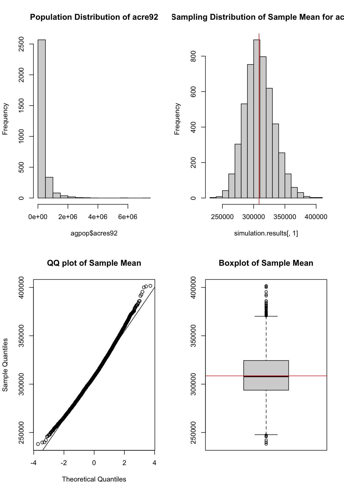

2.1.1 Step by step calculation without using a function
To evaluate a Simple Random Sample (SRS), we calculate the point estimate, the standard error (incorporating the Finite Population Correction factor), and the margin of error to construct a 95% confidence interval.
## extract the variable of interestsdata <- agsrs$acres92N <-3078## do calculationn <-length (sdata)ybar <-mean (sdata)se.ybar <-sqrt((1- n / N)) *sd (sdata) /sqrt(n) mem <-qt (0.975, df = n -1) * se.ybar## return estimate vector for pop meanc (Est. = ybar, S.E. = se.ybar, ci.low = ybar - mem, ci.upp = ybar + mem)
Est. S.E. ci.low ci.upp
297897.05 18898.43 260706.26 335087.84
Code
## return estimate vector for pop totalc (Est. = ybar, S.E. = se.ybar, ci.low = ybar - mem, ci.upp = ybar + mem) * N
Est. S.E. ci.low ci.upp
916927110 58169381 802453859 1031400361
2.1.2 Write a function for repeated use
2.1.2.1 A function for doing data analysis for srs sample
Wrap the previous manual calculations into a custom R function to quickly estimate means, standard errors, and confidence intervals for any variable of interest. We will also create a helper function using gt to format the numerical vector into a nice table with mathematical expressions in the headers.
Code
library(gt)# sdata -- a vector of sampling survey data# N -- population size # to find total, multiply N to the estimate returned by this functionsrs_mean_est <-function (sdata, N){ n <-length (sdata) ybar <-mean (sdata) se.ybar <-sqrt((1- n / N)) *sd (sdata) /sqrt(n) mem <-qt (0.975, df = n -1) * se.ybarc (ybar = ybar, se = se.ybar, ci.low = ybar - mem, ci.upp = ybar + mem)}# Helper function to format the output of srs_mean_est using gtformat_srs_gt <-function(est_vec, is_total =FALSE, is_prop =FALSE) {# Convert the named vector into a data frame df <-as.data.frame(t(est_vec))# Determine appropriate mathematical notation for the headersif (is_total) { est_sym <-"$\\hat{t}$" se_sym <-"$\\mathrm{SE}(\\hat{t})$" } elseif (is_prop) { est_sym <-"$\\hat{p}$" se_sym <-"$\\mathrm{SE}(\\hat{p})$" } else { est_sym <-"$\\bar{y}$" se_sym <-"$\\mathrm{SE}(\\bar{y})$" } df |>gt() |>cols_label(ybar =md(est_sym),se =md(se_sym),ci.low =md("95% CI Lower"),ci.upp =md("95% CI Upper") ) |>fmt_number(columns =everything(),decimals =4 ) |>tab_options(table.width =pct(60) )}
2.1.2.2 Apply srs_mean_est to agsrs.csv data
Import Data
Load the survey sample data representing US counties.
Code
agsrs <-read.csv ("data/agsrs.csv")
Estimating the mean of acre92
Calculate the estimated average farm acreage per county using the custom function and format the output with gt.
Code
srs_mean_est(agsrs[,"acres92"], N =3078) |>format_srs_gt()
\(\bar{y}\)
\(\mathrm{SE}(\bar{y})\)
95% CI Lower
95% CI Upper
297,897.0467
18,898.4344
260,706.2569
335,087.8365
Estimating the total of acre92
Scale the sample mean and confidence intervals by the population size (\(N = 3078\)) to estimate the total farm acreage across all counties.
Code
(srs_mean_est(agsrs[,"acres92"], N =3078) *3078) |>format_srs_gt(is_total =TRUE)
\(\hat{t}\)
\(\mathrm{SE}(\hat{t})\)
95% CI Lower
95% CI Upper
916,927,109.6400
58,169,381.1695
802,453,858.6054
1,031,400,360.6746
Estimating the proportion of counties with fewer than 200K acres for farming in 1992
To estimate a proportion under SRS, create an indicator variable (\(y_i = 1\) if true, \(0\) if false). The mean of this indicator variable serves as the sample proportion (\(\hat{p} = \bar{y}_{indicator}\)).
srs_mean_est(acres92.is.fewer.200k, N =3078) |>format_srs_gt(is_prop =TRUE)
\(\hat{p}\)
\(\mathrm{SE}(\hat{p})\)
95% CI Lower
95% CI Upper
0.5100
0.0275
0.4560
0.5640
Estimating the total number of counties with fewer than 200K acres for farming in 1992
Multiply the estimated proportion and its interval bounds by the total population size to estimate the absolute count of counties meeting the criteria.
Code
(srs_mean_est(acres92.is.fewer.200k, N =3078) *3078) |>format_srs_gt(is_total =TRUE)
\(\hat{t}\)
\(\mathrm{SE}(\hat{t})\)
95% CI Lower
95% CI Upper
1,569.7800
84.5372
1,403.4167
1,736.1433
2.1.3 Comparing with true value
Load the complete census (population) dataset to calculate the true parameters. This allows us to assess the accuracy of our previous SRS estimates against the exact population values.
# true proportion of counties with less than 200K acres for farmingmean (agpop[, "acres92"] <200000, na.rm = T)
[1] 0.5145472
Code
# true number of counties with less than 200K acres for farmingsum (agpop[, "acres92"] <200000, na.rm = T)
[1] 1574
2.2 A Simulation Demonstration of SRS Inference
Load the full population data and filter out missing values to serve as a complete, known finite population for resampling experiments.
Code
# read population data agpop <-read.csv ("data/agpop.csv")# remove those counties with naagpop <-subset( agpop, acres92 !=-99)
2.2.1 True Values
Define the target sample size and compute the true population mean (\(\mu\)) and theoretical standard error (\(\mathrm{SE}_{true}\)) using the known population standard deviation (\(S\)).
# get data of variable "acres92"sdata <- agpop [srs, "acres92"]# analysissrs_mean_est(sdata, N) |>format_srs_gt()
\(\bar{y}\)
\(\mathrm{SE}(\bar{y})\)
95% CI Lower
95% CI Upper
295,564.8900
19,856.0304
256,489.6187
334,640.1613
2.2.3 Repeating SRS sampling 5000 times
To demonstrate the Central Limit Theorem and unbiasedness of the estimator, draw 5,000 independent samples, storing the estimates from each iteration. We plot the resulting sampling distribution against the true population mean.
(Note: We use the raw vector output of srs_mean_est directly here to efficiently build the results matrix.)
# look at the distribution of sample meanpar (mfrow=c(2,2))hist (agpop$acres92,main ="Population Distribution of acre92")hist (simulation.results[,1], main ="Sampling Distribution of Sample Mean for acre92")abline (v = ybarU, col ="red")qqnorm (simulation.results[,1], main="QQ plot of Sample Mean"); qqline(simulation.results[,1])boxplot (simulation.results[,1], main ="Boxplot of Sample Mean")abline (h = ybarU, col ="red")

Code
mean (simulation.results[,1])
[1] 309345.2
Code
ybarU
[1] 308582.4
Code
sd (simulation.results [,1])
[1] 23322.94
Code
true.se.ybar
[1] 23320.29
2.2.4 Empirical Coverage Rate of CIs
Verify the reliability of the 95% confidence intervals by checking whether the true population mean falls within the calculated bounds for each of the 5,000 samples. The empirical coverage rate should closely approximate 0.95. The plot highlights the first 100 intervals, flagging those that fail to capture the true mean in a distinct color.